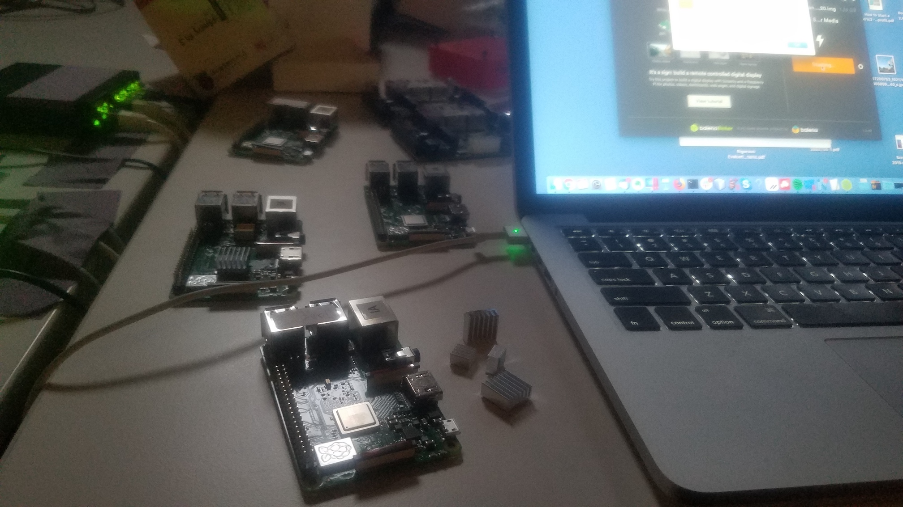

5.1 Application Testnet
This uses two Raspberry Pi 3B or 3B+ to emulate the network environment from the perspective of a device plugged into the local mesh network.

After running the installation script and when you power the Raspberry Pi back on, it will use its wireless interface to mesh with another similarly configured Raspberry Pi, and any device plugged into the ethernet port will receive an IP address in the 10.[random].0.0/16 subnet. Your device will behave as if it is plugged into the DWeb Camp network, assigned an IP address unique within the local network and reachable by any device connected to the network because Babel is redistributing routes to all devices. It is probably a good idea to unplug the Raspberry Pi from your home router before powering on to avoid having two DHCP servers on your home network.
Installation
You will need two Raspberry Pi 3B or 3B+ with SD cards, and probably ethernet cables to connect devices (e.g. laptops) to the Raspberry Pi local network.
-
Flash the SD card with Raspbian Buster Lite.
-
Create an empty file named ssh to enable SSH when the Pi boots:
$ touch /path/to/sd/boot/ssh -
Plug the SD card into the Pi.
-
Plug the Pi into your router so it has connectivity to the Internet. SSH into the Pi with
ssh pi@raspberrypi.localand password raspberry.Optional: There are other ways to connect, such as connecting the Pi to your computer and sharing Internet to it. If you have multiple Pi’s connected to your router, find th eir IPs with
nmap -sn 192.168.X.0/24(where 192.168.X is your subnet) and SSH to the local IP assigned to the Pi you want to addressssh pi@192.168.X.Y. -
Run the following, then let the installation complete. After installtion the Pi will power off:
$ wget https://raw.githubusercontent.com/dweb-camp-2019/meshnet/master/testnet/install && chmod +x install && ./install
Network Topology
This network has two Raspberry Pis (B and C) connected together running as Babel routers.
Laptops (A and B) or any other client with an ethernet port can connect through the Raspberry Pi ethernet port eth0 and be assigned an IP address.
The two Raspberry Pi themselves use the on-board WiFi in ad-hoc mode to wirelessles connect with each other.
+------------------+ +-------------------------------+ +-------------------------------+ +------------------+
| A: Laptop client | | B: Raspberry Pi babel router | | C: Raspberry Pi babel router | | D: Laptop client |
| 10.131.225.234 +--------+ eth0: 10.131.0.1 assigns /16 + - - - - + eth0: 10.201.0.1 assigns /16 +--------+ 10.201.30.107 |
| assigned by B | eth0 | wlan0: 192.168.133.131 in /24 | wlan0 | wlan0: 192.168.133.201 in /24 | eth0 | assigned by C |
+------------------+ +-------------------------------+ +-------------------------------+ +------------------+
The Babel routers are configured to announce their client subnets, so all devices are visible to one another and the IP addresses can be treated as public IP addresses. In this example:
- A: 10.131.225.234
- B: 10.131.0.1
- C: 10.201.0.1
- D: 10.201.30.107
This means even though clients A and D themselves do not run Babel, all the devices can ping each other on these IP addresses.
If you are running an application on a computer, server, single-board computer, phone, or any other device, this is the IP address that other people on the local mesh network can reach you at.
In this Raspberry Pi model of the network, you can see that A and D can send and receive from one another through the chain at about 33 Mbps, limited by the wireless wlan0 link:
$ iperf3 -c 10.201.30.107 ⏎
Connecting to host 10.201.30.107, port 5201
[ 5] local 10.131.225.234 port 57472 connected to 10.201.30.107 port 5201
[ ID] Interval Transfer Bitrate
[ 5] 0.00-1.00 sec 4.98 MBytes 41.8 Mbits/sec
[ 5] 1.00-2.00 sec 3.93 MBytes 33.0 Mbits/sec
[ 5] 2.00-3.00 sec 3.60 MBytes 30.2 Mbits/sec
[ 5] 3.00-4.00 sec 3.84 MBytes 32.2 Mbits/sec
[ 5] 4.00-5.00 sec 3.93 MBytes 33.0 Mbits/sec
[ 5] 5.00-6.00 sec 3.96 MBytes 33.2 Mbits/sec
[ 5] 6.00-7.00 sec 3.84 MBytes 32.2 Mbits/sec
[ 5] 7.00-8.00 sec 3.91 MBytes 32.8 Mbits/sec
[ 5] 8.00-9.00 sec 4.07 MBytes 34.2 Mbits/sec
[ 5] 9.00-10.00 sec 4.05 MBytes 34.0 Mbits/sec
- - - - - - - - - - - - - - - - - - - - - - - - -
[ ID] Interval Transfer Bitrate
[ 5] 0.00-10.00 sec 40.1 MBytes 33.7 Mbits/sec sender
[ 5] 0.00-10.00 sec 40.1 MBytes 33.7 Mbits/sec receiver
iperf Done.
$ iperf3 -c 10.201.30.107 -R
Connecting to host 10.201.30.107, port 5201
Reverse mode, remote host 10.201.30.107 is sending
[ 5] local 10.131.225.234 port 57475 connected to 10.201.30.107 port 5201
[ ID] Interval Transfer Bitrate
[ 5] 0.00-1.00 sec 3.79 MBytes 31.8 Mbits/sec
[ 5] 1.00-2.00 sec 3.95 MBytes 33.1 Mbits/sec
[ 5] 2.00-3.00 sec 3.34 MBytes 28.0 Mbits/sec
[ 5] 3.00-4.00 sec 3.88 MBytes 32.5 Mbits/sec
[ 5] 4.00-5.00 sec 3.89 MBytes 32.6 Mbits/sec
[ 5] 5.00-6.00 sec 3.89 MBytes 32.6 Mbits/sec
[ 5] 6.00-7.00 sec 3.98 MBytes 33.4 Mbits/sec
[ 5] 7.00-8.00 sec 4.00 MBytes 33.5 Mbits/sec
[ 5] 8.00-9.00 sec 3.98 MBytes 33.4 Mbits/sec
[ 5] 9.00-10.00 sec 3.89 MBytes 32.6 Mbits/sec
- - - - - - - - - - - - - - - - - - - - - - - - -
[ ID] Interval Transfer Bitrate Retr
[ 5] 0.00-10.00 sec 39.9 MBytes 33.4 Mbits/sec 0 sender
[ 5] 0.00-10.00 sec 39.6 MBytes 33.2 Mbits/sec receiver
iperf Done.
The actual network at DWeb Camp will have much more bandwidth, and at much larger distances with more hops, but this model should emulate the environment for you to test applications running on clients A and D.